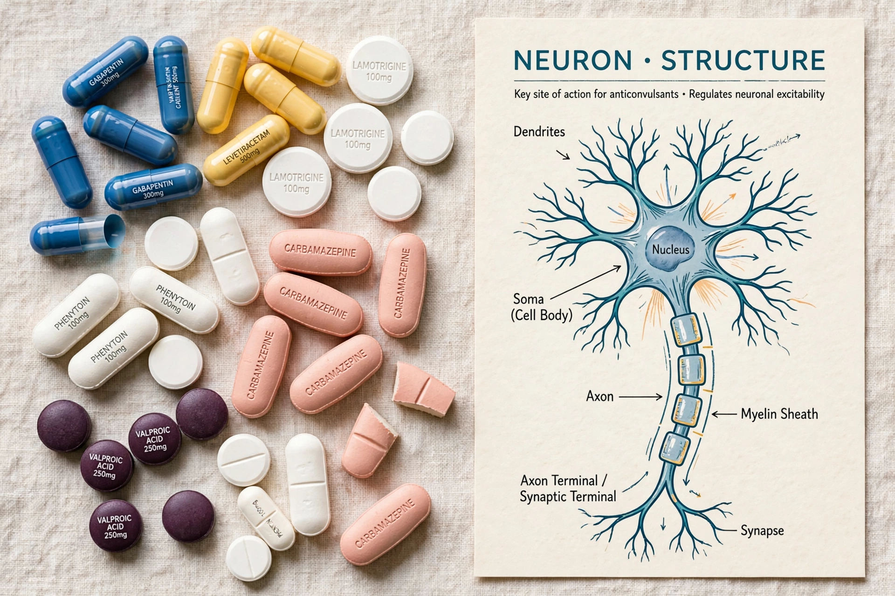

Anticonvulsants (also known as antiepileptic drugs, antiseizure drugs, or antiseizure medications) are a diverse group of pharmacological agents used in the treatment of epileptic seizures. A growing number are also used for bipolar disorder, neuropathic pain, migraine prophylaxis, and other conditions.
Anticonvulsants suppress the excessive rapid firing of neurons that underlies seizures. Common mechanisms include blockade of voltage-gated sodium channels (e.g. phenytoin, carbamazepine, lamotrigine), enhancement of GABA-mediated inhibition (e.g. benzodiazepines, phenobarbital, valproate), blockade of calcium channels (ethosuximide for absence seizures), and newer mechanisms such as binding to the synaptic vesicle protein SV2A (levetiracetam).
The first effective antiepileptic was potassium bromide, introduced in 1857; phenobarbital followed in 1912 and phenytoin in 1938. A wave of drug development from the 1990s onward produced "second-" and "third-generation" agents with improved tolerability. Despite treatment, roughly a third of people with epilepsy continue to have seizures.
Many anticonvulsants are teratogenic, valproate being the most notable, and their use in pregnancy requires careful risk assessment. Other issues include drug interactions (several are potent enzyme inducers), the need for gradual withdrawal to avoid rebound seizures, and, for some agents, monitoring of blood levels and blood counts.